flowchart TD A(Exploratory) A --> B(1. Overview) A --> C(2. Geospatial Exploration) A --> D(3. Trends) A --> E(4. Distributions) A --> F(5. Network Relationships) A --> G(6. Incident Summary)
Take-home Exercise 4 - Part 3
Decoding Chaos: Storyboard for Exploratory tab
1. Overview
Note: This is a continuation of the take-home exercise 4.
This assignment is separated into three segments (web pages):
- Initial Data Exploratory Analysis (IDEA) – Click here for IDEA page.
- Geospatial Data Exploratory Analysis (GDEA) – Click here for GDEA page.
- Prototype: Exploratory – Current Page
2. Storyboard
Storyboard aims to visually maps out user’s experience. It is a tool for making strong visual connection between the insights uncovered based on research and user’s interaction with the R Shiny dashboard application. The interactive components and UI design aims to facilitate data (and geospatial) exploration and analysis for users in the Defence and Security sectors to develop effective counter measures and strategies.
The “Exploratory” dashboard can be broadly classify into two key areas:
Geospatial Data Exploratory Analysis allows users to select different variables and perform spatial exploration on the dataset to conceptualise armed conflict spaces in Myanmar.
Data Exploratory Analysis allows users to select different variables and perform initial exploration on the dataset to discover distribution, trends and network relationships of armed conflicts in Myanmar.
The proposed layouts and UI features for “Exploratory” have been conceptualised into six sections as follows:
For enhanced user experience, the prototype included ‘filter’ components (i.e. desired characteristics) and ‘chart interpretation’ boxes, and have aligned them mainly to the right side of the web pages. This was intentionally set in that way to separate the main sidebar. The ‘chart interpretation’ box provides brief explanation of how each chart can be interpreted.
Section One - Overview
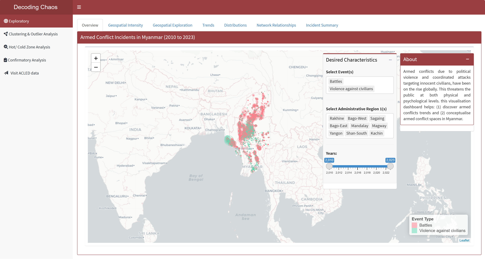
This tab serves as the “landing page” that displays the map of Myanmar and its spatial points of armed conflicts over the years (i.e. 2010 to 2023). Figure below shows the UI interactive features in the Overview sub-tab.
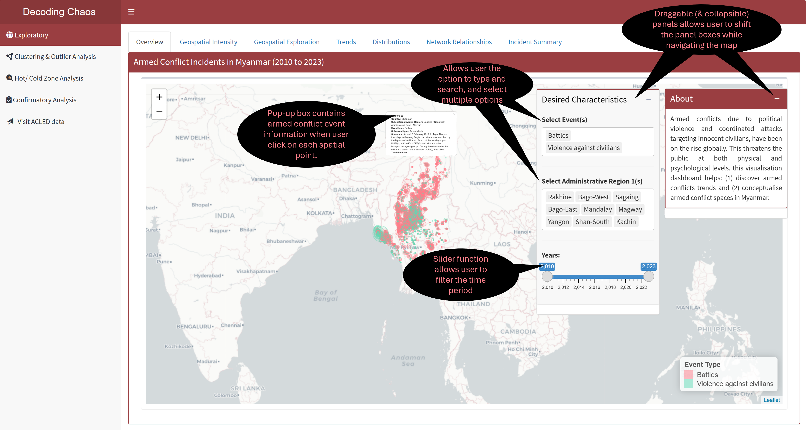
Code chunk below shows the simplified version of UI and Server components in R Shiny application for Overview sub-tab.
Show code
# UI Components
ExploreOverviewrow1 <- fluidRow(
leafletOutput(), # display point spatial map
selectizeInput(), # select event (allows multiple selection)
selectizeInput(), # select administrative region (allows multiple selection)
sliderInput() # select year range
)
# Server Components
output1 <- renderLeaflet({}) # point spatial mapSection Two - Geospatial Exploration
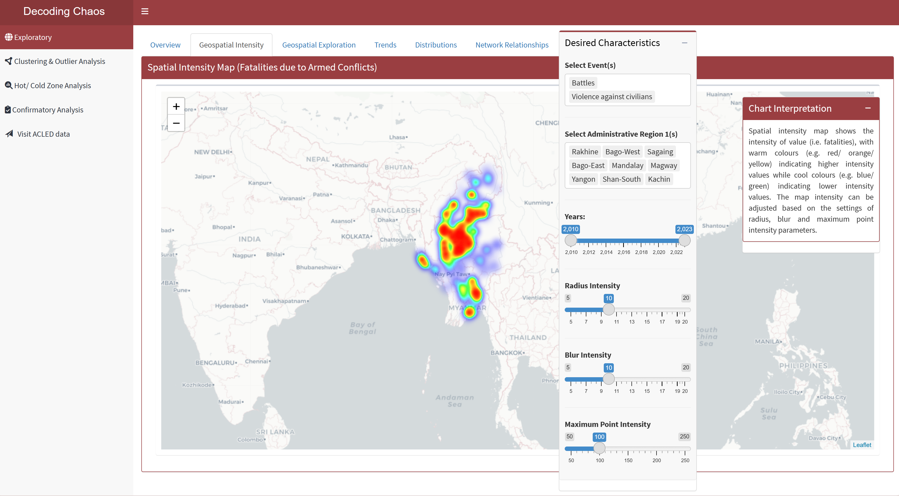
This tab displays two geospatial exploration maps (i.e. statistical distribution and spatial distribution). For statistical distribution map, it is a boxmap that displays the spatial representation that is similar to boxplot and histogram, which is useful to detect outliers and visualise distribution of variables. For spatial distribution map visualises spatial pattern or distribution across different geographical subnational administrative regions by plotting choropleth map.
Each map has its own different filter options that serve their different purposes. Users would be able to select different display variables and perform spatial exploration to conceptualise armed conflict spaces in Myanmar accordingly. Figure below shows the UI interactive features in the Geospatial Exploration sub-tab.
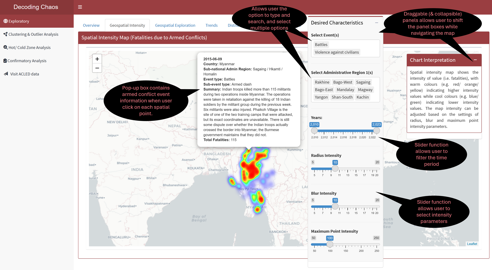
Code chunk below shows the simplified version of UI and Server components in R Shiny application for Geospatial Exploration sub-tab.
Show code
# UI Components
ExploreGeospatialrow1 <- fluidRow(
radioButtons(), # display radio button options
tmapOutput(), # display statistical distribution map
tmapOutput(), # display spatial distribution map
selectInput(), # dropdown box selection for year
radioButtons(), # display radio button options
selectInput(), # dropbox selection for classification types
selectInput() # dropbox selection for number of classes
)
# Server Components
output2.1 <- renderTmap({}) # statistical distribution map
output2.2 <- renderTmap({}) # spatial distribution mapSection Three - Trends
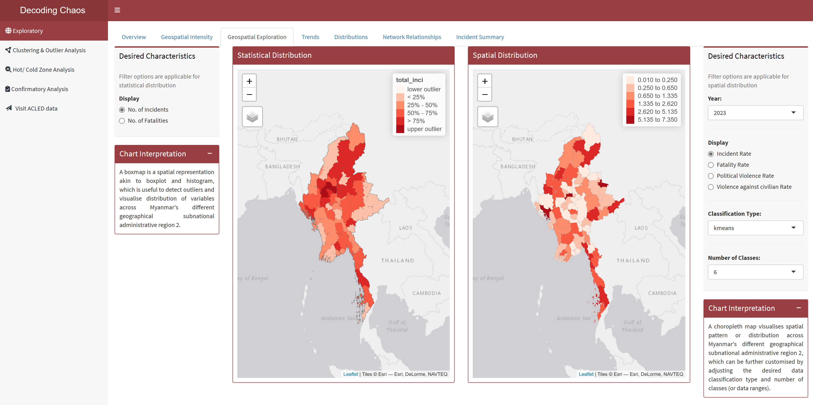
This tab allows user to perform time series analysis to identify trends, or cyclic patterns, spot anomalies, visualise distribution of armed conflict incidents/ fatalities and how it has changed over the years using either line chart or calendar heatmap. As the line chart shows month-on-year over a timeframe period, while calendar heatmap shows day-on-month at annual level, the two separate filter options for the charts are made available to users to serve different purposes. Figure below shows the UI interactive features in the Trends sub-tab.
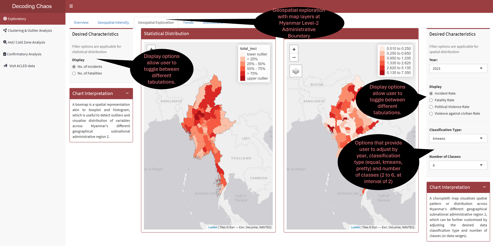
Code chunk below shows the simplified version of UI and Server components in R Shiny application for Trends sub-tab.
Show code
# UI Components
ExploreTrendrow1 <- fluidRow(
highchartOutput(), # display line chart
selectizeInput(), # select event (allows multiple selection)
selectizeInput(), # select administrative region (allows multiple selection)
sliderInput() # select year range
)
ExploreTrendrow2 <- fluidRow(
plotlyOutput(), # display calendar heatmap
selectInput(), # dropdown box selection for year
radioButtons() # display radio button options
)
# Server Components
output3.1 <- renderPlotly({}) # line chart
output3.2 <- renderPlotly({}) # calendar heatmapSection Four - Distributions
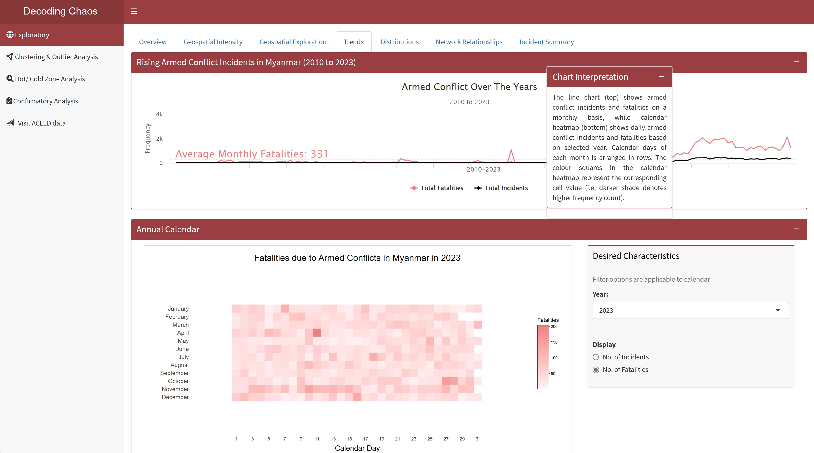
This tab provides user with data exploration tools to explore the distribution of armed conflict incidents that resulted in fatalities and the dispersion of such incidents across the years in Myanmar. Figure below shows the UI interactive features in the Distribution sub-tab.
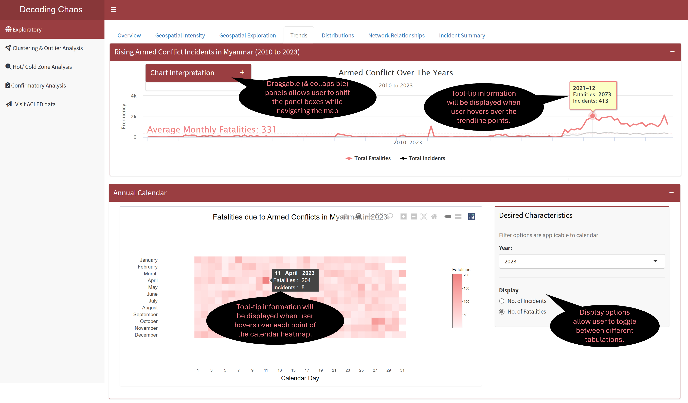
Code chunk below shows the simplified version of UI and Server components in R Shiny application for Distributions sub-tab.
Show code
# UI Components
ExploreDistributionrow1 <- fluidRow(
sliderInput() # select year range
)
ExploreDistributionrow2 <- fluidRow(
plotlyOutput(), # display plot 1
plotlyOutput() # display plot 2
)
# Server Components
output4.1 <- renderPlotly({}) # distribution plot 1
output4.2 <- renderPlotly({}) # distribution plot 2Section Five - Network Relationships
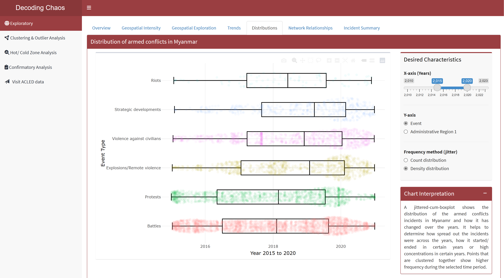
This tab provides users with data exploration tools to explore on the network association amongst the top actors (with more than 300 interactions with the other actors in each year) involved in the armed conflict incidents in Myanmar. Figure below shows the UI interactive features in the Network Relationships sub-tab.
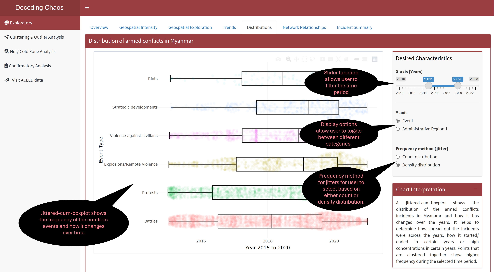
Code chunk below shows the simplified version of UI and Server components in R Shiny application for Network Relationships sub-tab.
Show code
# UI Components
ExploreNetworkrow1 <- fluidRow(
plotOutput(), # display network graph
selectizeInput(), # select event (allows multiple selection)
selectizeInput(), # select administrative region (allows multiple selection)
selectInput() # select year
)
# Server Components
output5 <- renderPlot({}) # network graphSection Six - Incident Summary
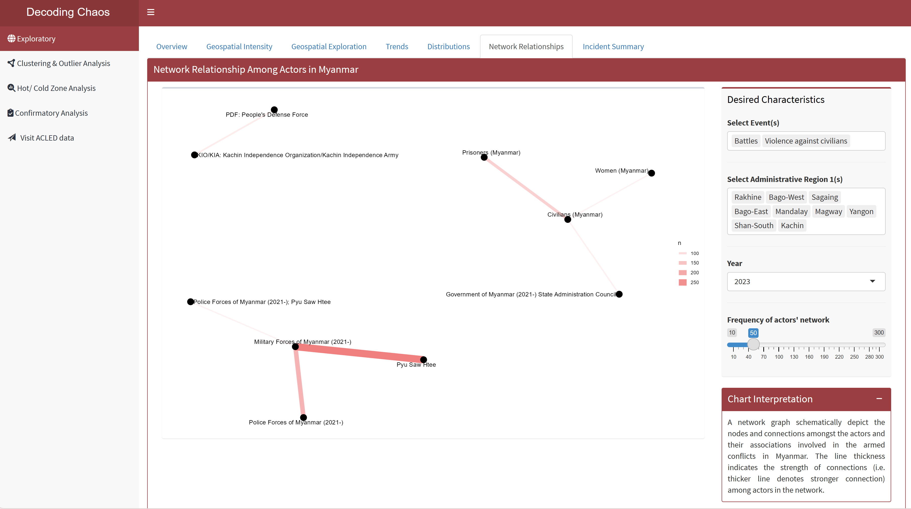
This tab visualises large volume of armed conflict incident summary notes that captures keywords recorded in a word cloud. This is useful to spot changes over time where users do not have to read through all incident summary notes. In addition, an interactive datatable is provided for users who prefer to explore the dataset.
Figure below shows the UI interactive features in the Incident Summary sub-tab.
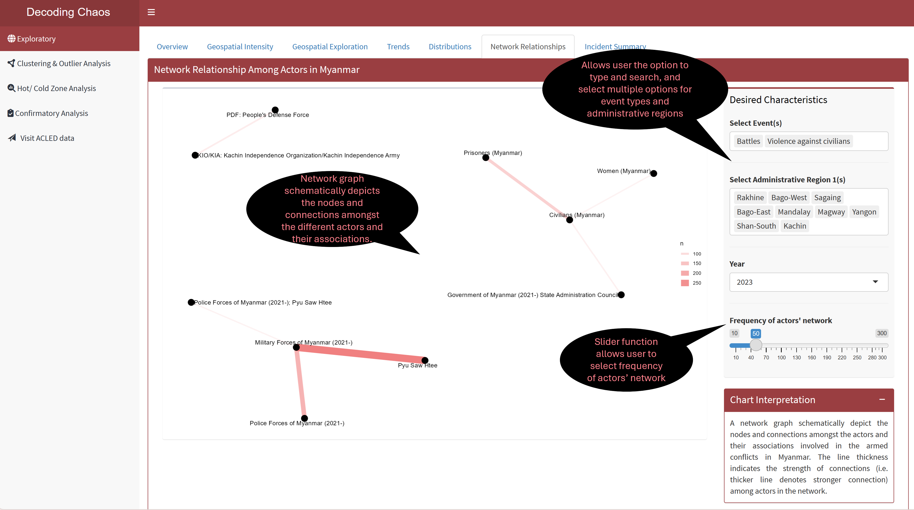
Code chunk below shows the simplified version of UI and Server components in R Shiny application for Incident Summary sub-tab.
Show code
# UI Components
ExploreSummaryrow1 <- fluidRow(
selectizeInput(), # select event (allows multiple selection)
selectizeInput(), # select administrative region (allows multiple selection)
selectInput(), # select year
plotOutput(), # display word cloud
DT::dataTableOutput() # display datatable
)
# Server Components
output6.1 <- renderPlot({}) # word cloud
output6.2 <- DT::renderDataTable({}) # data table3. R Shiny Application (simplified code)
The storyboard (in Section 2) facilitates the development of a prototype in R Shiny Application. Iterative prototyping will allow continuous improvement of the final dashboard for the project when combined with the other team members’ work.
The proposed layouts and UI features for “Exploratory” have been conceptualised into six sections (or tabPanel() in R Shiny Application terms), in which ExploreSubTabs will form one of the tabsetPanel() in the entire project dashboard as part of UI.
Code chunk below shows the simplified version of R Shiny Application for Exploratory prototype.
#==========================================================
## load R packages
#==========================================================
pacman::p_load(shiny, shinydashboard, shinycssloaders, tidyverse, dplyr,
leaflet, plotly, highcharter, ggthemes, fresh, sf, spdep, tmap,
tm, ggforce, ggraph, igraph, wordcloud, tidytext, DT)
#==========================================================
## UI Components
#==========================================================
# main header ---
header <- dashboardHeader(title = "Decoding Chaos")
# main sidebar ---
sidebar <- dashboardSidebar()
sidebarMenu(
menuItem("Exploratory", tabName = "Exploratory"),
menuItem("Clustering & Outlier Analysis", tabName = "Clustering"),
menuItem("Hot/ Cold Zone Analysis", tabName = "HotCold"),
menuItem("Confirmatory Analysis", tabName = "Confirmatory"),
menuItem("Visit ACLED data"))
# main body ---
body <- dashboardBody(
tabItems(
tabItem(tabName = "Exploratory",
ExploreSubTabs
),
tabItem(tabName = "Cluster and Outlier Analysis"
),
tabItem(tabName = "Hot/ Cold Zone Analysis"
),
tabItem(tabName = "Confirmatory Analysis"
)
)
)
# fluidRows ---
ExploreOverviewrow1 <- fluidRow(
leafletOutput(), # display point spatial map
selectizeInput(), # select event (allows multiple selection)
selectizeInput(), # select administrative region (allows multiple selection)
sliderInput() # select year range
)
ExploreGeospatialrow1 <- fluidRow(
radioButtons(), # display radio button options
tmapOutput(), # display statistical distribution map
tmapOutput(), # display spatial distribution map
selectInput(), # dropdown box selection for year
radioButtons(), # display radio button options
selectInput(), # dropbox selection for classification types
selectInput() # dropbox selection for number of classes
)
ExploreTrendrow1 <- fluidRow(
highchartOutput(), # display line chart
selectizeInput(), # select event (allows multiple selection)
selectizeInput(), # select administrative region (allows multiple selection)
sliderInput() # select year range
)
ExploreTrendrow2 <- fluidRow(
plotlyOutput(), # display calendar heatmap
selectInput(), # dropdown box selection for year
radioButtons() # display radio button options
)
ExploreDistributionrow1 <- fluidRow(
sliderInput() # select year range
)
ExploreDistributionrow2 <- fluidRow(
plotlyOutput(), # display distribution plot 1
plotlyOutput() # display distribution plot 2
)
ExploreNetworkrow1 <- fluidRow(
plotOutput(), # display network graph
selectizeInput(), # select event (allows multiple selection)
selectizeInput(), # select administrative region (allows multiple selection)
selectInput() # select year
)
ExploreSummaryrow1 <- fluidRow(
selectizeInput(), # select event (allows multiple selection)
selectizeInput(), # select administrative region (allows multiple selection)
selectInput(), # select year
plotOutput(), # display word cloud
DT::dataTableOutput() # display datatable
)
# subtabs
ExploreSubTabs <- tabsetPanel(
tabPanel("Overview",
ExploreOverviewrow1
),
tabPanel("Geospatial Exploration",
ExploreGeospatialrow1
),
tabPanel("Trends",
ExploreTrendrow1,
ExploreTrendrow2
),
tabPanel("Distribution",
ExploreDistributionrow1,
ExploreDistributionrow2,
ExploreDistributionrow3
),
tabPanel("Network Relationship",
ExploreNetworkrow1
),
tabPanel("Incident Summary",
ExploreSummaryrow1
)
)
#==========================================================
## UI dashboard
#==========================================================
ui <- dashboardPage(title = 'Armed Conflicts in Myanmar (2010 to 2023)',
header, sidebar, body)
#==========================================================
## Server Components
#==========================================================
server <- function(input, output) {
output1 <- renderLeaflet({}) # point spatial map
output2.1 <- renderTmap({}) # statistical distribution map
output2.2 <- renderTmap({}) # spatial distribution map
output3.1 <- renderPlotly({}) # line chart
output3.2 <- renderPlotly({}) # calendar heatmap
output4.1 <- renderPlotly({}) # distribution plot 1
output4.2 <- renderPlotly({}) # distribution plot 2
output5 <- renderPlot({}) # network graph
output6.1 <- renderPlot({}) # word cloud
output6.2 <- DT::renderDataTable({}) # data table
}
#==========================================================
## Run Shiny Application
#==========================================================
shinyApp(ui = ui, server = server)